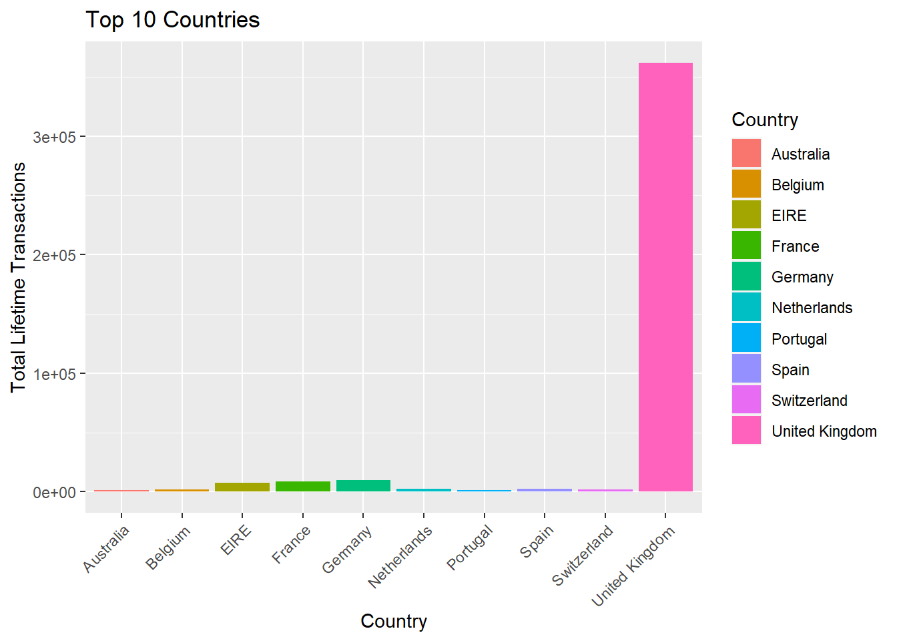
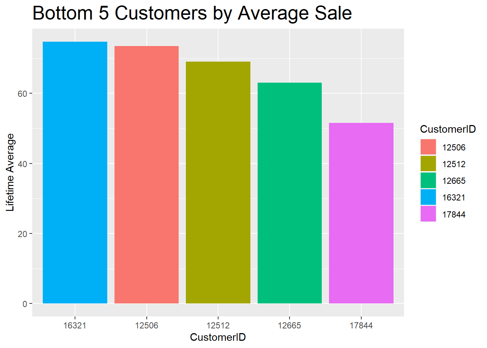
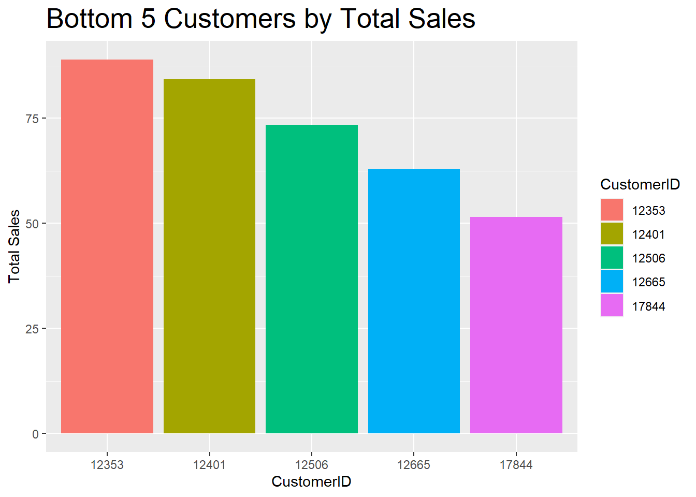
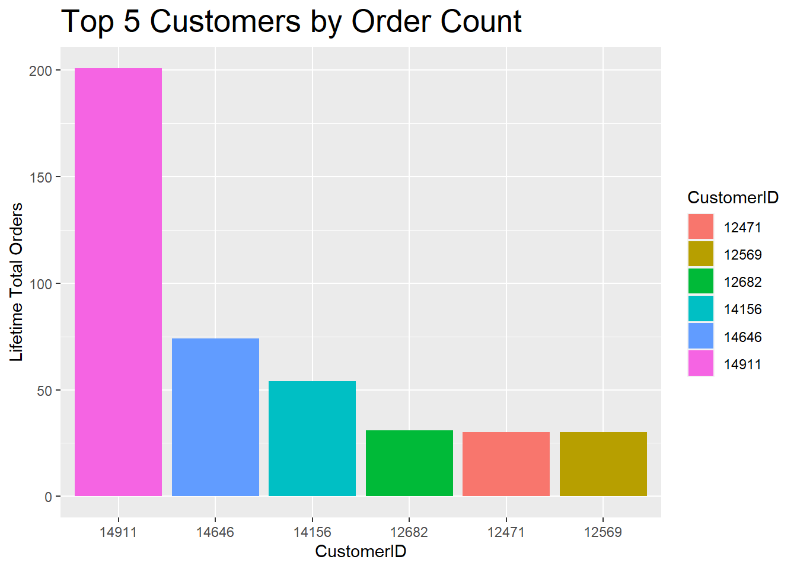
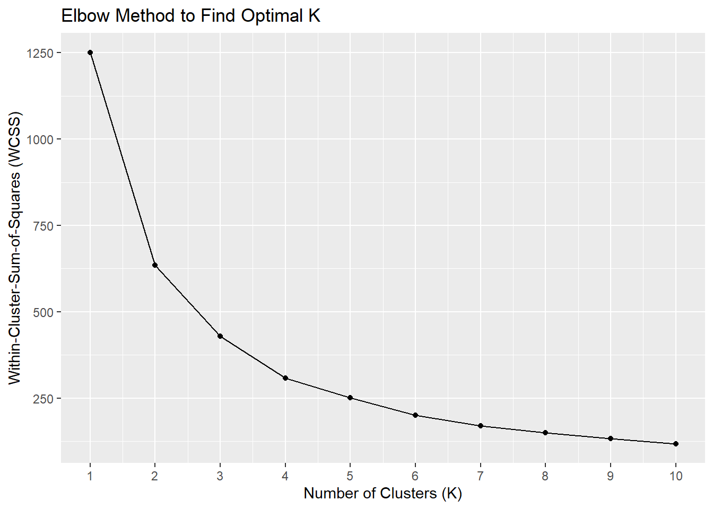
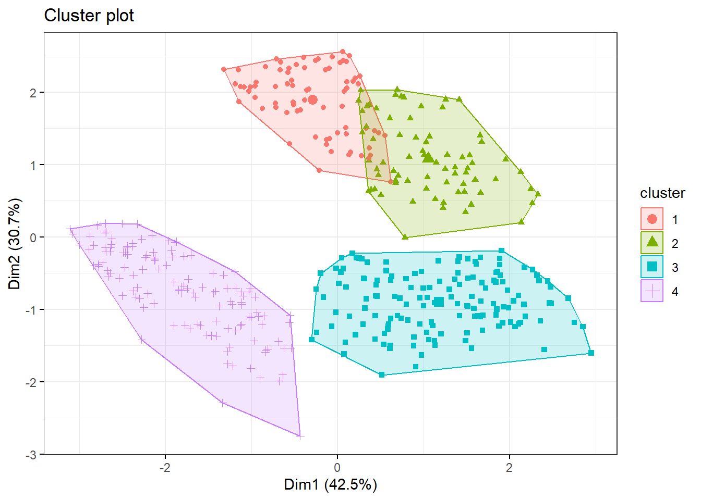

5 Data, Preprocessing, & Modeling
To begin, an appropriate data source is identified. The data used in this analysis comes from UC Irvine’s Machine Learning Repository, titled “Online Retail” (“Online Retail” 2015). In order to maintain a healthy set of usable data, disruptive null values from the the base data are removed and a subsequent view of data descriptions are explored.
Code
data_nulls_removed <- na.omit(data)
summary(data_nulls_removed) InvoiceNo StockCode Description Quantity
Length:406829 Length:406829 Length:406829 Min. :-80995.00
Class :character Class :character Class :character 1st Qu.: 2.00
Mode :character Mode :character Mode :character Median : 5.00
Mean : 12.06
3rd Qu.: 12.00
Max. : 80995.00
InvoiceDate UnitPrice CustomerID Country
Length:406829 Min. : 0.00 Min. :12346 Length:406829
Class :character 1st Qu.: 1.25 1st Qu.:13953 Class :character
Mode :character Median : 1.95 Median :15152 Mode :character
Mean : 3.46 Mean :15288
3rd Qu.: 3.75 3rd Qu.:16791
Max. :38970.00 Max. :18287 The descriptions show that the data, excluding observations with null values, consists of \(406,829\) total observations. This specific data set originates from an online retailer located in the United Kingdom, but provides retail service to many different countries and regions. From the summary of the chosen data set, \(8\) variables are identified: InvoiceNo, StockCode, Description, Quantity, InvoiceDate, UnitPrice, CustomerID, and Country.
Code
head(data_nulls_removed,10)The frequency of purchases by Country may help provide some context about the regional distribution of customers, as well as the possible variety of customers:
Code
topCountries_all <- data_nulls_removed %>% count(Country) %>% slice_max(n, n = 10, with_ties = FALSE)
ggplot(data = topCountries_all, mapping = aes(x=Country, y=n, fill=Country)) +
geom_bar(stat="identity") +
labs(title = "Top 10 Countries", y="Total Lifetime Transactions") +
theme(axis.text.x = element_text(angle=45, vjust=1, hjust=1))
It quickly becomes apparent that an overwhelming amount of data comes from the UK, as expected, which could skew the results during any analysis. In order to avoid this, a subset of data is generated which excludes data associated with the UK.
Code
data_no_uk <- data_nulls_removed[data_nulls_removed$Country != "United Kingdom",]With the UK data removed, the top \(10\) frequencies are examined:
Code
topCountries <- data_no_uk %>% count(Country) %>% slice_max(n, n = 10, with_ties = FALSE)
ggplot(data = topCountries, mapping = aes(x=Country, y=n, fill=Country)) +
geom_bar(stat="identity") +
labs(title = "Top 10 Countries (excluding UK)", y="Total Lifetime Transactions") +
theme(axis.text.x = element_text(angle=45, vjust=1, hjust=1))
Now that the distribution of data does not primarily fall under a single country’s customer base, the analysis can proceed.
Referring back to the view of the data table, there appears to be more than \(1\) observation per InvoiceNo. This means that the data is not grouped by any particular category, product, or location. In order to create a better view of each customer and their spending habits, some simple calculated fields are created and assigned back to the data in use.
Here the Quantity and UnitPrice columns are multiplied together and assigned to a new variable called “total” in order to obtain the total cost based on the number of items purchased per observation:
Code
data_no_uk <- data_no_uk %>% mutate(total = data_no_uk$Quantity*data_no_uk$UnitPrice)The data is beginning to look usable and gives a more robust view of the customers, but there are still some improvements that can be made to ensure bias is avoided. Since the interest lies in purchasing-customer clustering, any customers or invoices that include returns or negative values for Quantity can be excluded from the data.
Code
data_no_uk <- data_no_uk %>% subset(Quantity > 0)For the remainder of the analysis, only the applicable columns of interest are retained and assigned to a new data frame called “df1”:
Code
df1 <- data_no_uk %>% dplyr::select(Quantity,UnitPrice,CustomerID,InvoiceDate,total)Next, a sum total of sales from the previously derived column “total” is created as “Sales”, along with a unique count of InvoiceDate to provide the number of orders made called “Orders”, and the difference of those two variables called “AvgSale”. The data is then grouped by CustomerID to decrease the granularity and provide a more complete view of each customer and their purchasing history and habits. This new set of data will be labeled “customer_data”:
Code
customer_data <- df1 %>% group_by(CustomerID) %>% summarize(Sales=sum(total), Orders=length(unique(InvoiceDate))) %>% mutate(AvgSale=Sales/Orders)Based on the newly compressed data, customers’ behaviors can be visualized and used in a meaningful clustering exercise:





Having a better view and understanding of the data format and structure, the next step is to normalize the data in order to produce a normal distribution across the different variables. This is done by ranking the Sales, Orders, and Average Sales. Once these values have been ranked, they can be scaled for the final output. This final output is called “df_norm”.
Code
df_ranked <- customer_data %>% mutate(Sales=rank(Sales), Orders=rank(Orders, ties.method = "first"), AvgSale=rank(AvgSale))
df_norm <- df_ranked %>% mutate(Sales=scale(Sales), Orders=scale(Orders), AvgSale=scale(AvgSale))The resulting data is verified as normal by checking the standard deviation of each variable. CustomerID will not be normalized since it is an identifier for each record:
CustomerID Sales Orders AvgSale
891.1709 1.0000 1.0000 1.0000 Now that the data is normalized, a value is determined for \(k\) using the Elbow Method:
Code
# Create an empty vector to store WCSS values
wcss <- vector("numeric", length = 10)
# Iterate over a range of K values (e.g., from 1 to 10)
for (i in 1:10) {
model <- kmeans(df_norm[c("Sales", "Orders", "AvgSale")], centers = i, nstart = 10)
wcss[i] <- ceiling(model$tot.withinss)
}
# Plot the WCSS values against the number of clusters
ggplot(data.frame(K=1:10, WCSS=wcss), aes(x=K, y=WCSS)) +
geom_line() +
geom_point() +
labs(title="Elbow Method to Find Optimal K", x="Number of Clusters (K)", y="Within-Cluster-Sum-of-Squares (WCSS)") +
scale_x_continuous(breaks = seq(0, 10, by = 1))
Based on the results of the Elbow Method, above, the total WCSS appears to decrease less and less starting at \(4\). This gives us the ideal starting value for the initial number of clusters in the k-means model.
To build the model, a seed is set (in order to make the results reproducible) and the model function is initialized:
Code
set.seed(100)
model1 <- kmeans(df_norm[c("Sales", "Orders", "AvgSale")],4)The raw model results are presented here:
K-means clustering with 4 clusters of sizes 75, 73, 145, 125
Cluster means:
Sales Orders AvgSale
1 -0.6837708 -0.9636583 0.1547879
2 0.5362754 -0.5003309 1.2053864
3 0.9694582 1.0724979 0.3112028
4 -1.0274938 -0.3737094 -1.1578137
Clustering vector:
[1] 3 3 2 1 3 4 2 1 2 2 2 3 2 4 3 4 3 4 4 3 2 3 1 1 4 2 2 1 3 3 3 4 4 3 1 1 3
[38] 2 3 2 2 3 4 4 1 2 2 3 3 2 1 3 4 4 3 3 1 1 4 4 3 2 1 1 4 3 3 4 3 3 3 1 2 1
[75] 3 2 4 4 3 4 2 1 1 3 4 3 4 1 2 3 2 3 1 1 2 3 3 1 1 3 3 3 3 1 3 3 1 1 3 3 3
[112] 3 3 1 3 1 4 4 3 2 4 3 2 3 4 4 3 4 4 1 4 1 2 1 2 3 3 1 3 1 4 3 3 3 4 3 3 4
[149] 1 2 1 2 1 3 3 4 1 1 2 4 4 2 4 4 3 4 3 4 4 2 4 3 1 4 1 3 3 4 1 4 4 3 4 2 1
[186] 1 4 4 3 3 2 4 4 4 4 2 1 4 4 3 4 3 3 4 3 4 4 1 4 2 3 3 2 1 3 1 3 1 1 4 3 3
[223] 3 4 4 4 2 3 3 4 2 1 3 2 3 1 1 3 4 3 3 1 3 2 3 4 4 4 4 2 2 4 3 3 1 4 4 3 3
[260] 4 1 3 2 3 4 4 3 3 3 3 4 3 3 3 3 3 4 2 2 1 4 4 1 4 4 3 1 4 4 3 3 1 3 3 3 3
[297] 2 3 1 2 2 4 4 3 3 4 4 4 1 3 3 4 1 3 4 1 4 1 4 4 2 1 4 3 4 2 3 3 2 4 3 2 3
[334] 2 4 2 3 2 2 2 3 4 3 1 3 3 4 4 4 4 4 4 1 4 1 1 4 2 1 4 1 4 4 4 2 4 4 2 2 1
[371] 2 3 4 2 3 3 4 3 4 4 3 2 3 4 4 4 3 3 4 2 4 2 2 2 3 3 1 3 3 1 2 2 3 3 3 3 4
[408] 2 2 4 4 3 1 3 1 3 2 4
Within cluster sum of squares by cluster:
[1] 42.17291 55.77070 147.56352 119.54895
(between_SS / total_SS = 70.8 %)
Available components:
[1] "cluster" "centers" "totss" "withinss" "tot.withinss"
[6] "betweenss" "size" "iter" "ifault" While the raw output is useful, the best tool is to visualize the observations based on their resulting clusters.
Plot and view cluster results:
Code
fviz_cluster(model1, data = df_norm,
geom = "point",
ellipse.type = "convex",
ggtheme = theme_bw()
)
Since the model utilizes more than \(2\) variables, the axis of the graph, above, are based on principle components instead of the individual model variables.
The graph below shows the customers in relation to all three model variables.
Code
plot_ly(customer_data, x=~Orders, y=~Sales, z=~AvgSale,
color=~Cluster2,
colors=c("red","green","blue","violet")) %>%
add_markers(size=2) %>%
layout(scene = list(xaxis=axx,yaxis=axy,zaxis=axz))Interactive graph (left click to rotate / right click to move)
- Cluster Explanation
- Cluster 1 - Customers in this cluster have lower total sales, low number of orders, and relatively average per-order sales. These customers could potentially be newer customers and would benefit from some targeted marketing in order to drive engagement and increase total sales.
- Cluster 2 - The customers in this cluster have average total sales with slightly below average number of orders and very high average sales. These customers buy expensive items but not very frequently. The business would benefit from marketing their more expensive items to this customer group.
- Cluster 3 - Customers in cluster three have higher total sales and number of orders, but average order value is not very high. They most likely purchase frequently and would benefit from low-mid priced item recommendations to increase or maintain these customers’ engagement.
- Cluster 4 - These customers have the lowest total sales, lower number of orders, and low average sales amounts.